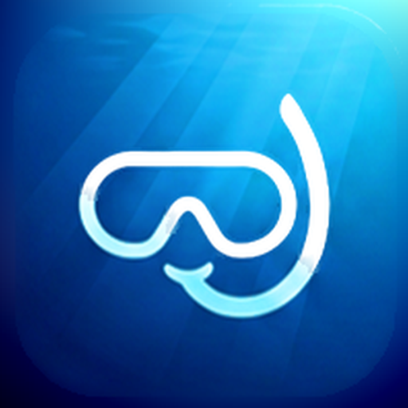

Clarity
How far will you see underwater? Visibility forecasts for the coast, now and for the next two days.
Installing
- Tap Download for Android on your phone.
- Open the downloaded Clarity.apk. If your phone asks, allow your browser to install unknown apps. Clarity isn't on Google Play yet, so this is needed once.
- Tap Install, then Open.
Updating: Clarity tells you when a new version is out. Download it the same way; your saved spots are kept.
What it does
- Forecasts visibility in metres for any coastal spot, hour by hour for 48 hours.
- Explains what's limiting it: swell, rain runoff, onshore wind, river outflow or low light.
- In Cyprus, uses high-resolution Copernicus wave forecasts and satellite water-clarity data.
- Find spots by GPS, search or map, and save your favourites.
Help improve it
After a dive or snorkel, tap Report a dive and say how far you could see. Reports are anonymous and are compared with Clarity's forecasts to make them more accurate.
Good to know
Clarity's visibility figures are estimates from weather, wave and satellite data, not measurements. Always check conditions yourself before getting in the water.
Privacy: Clarity doesn't ask for your name or email. Your location is only used to find nearby forecasts. Dive reports contain the spot, time, what you saw and a random ID for the install.